scRNA-seq全栈式教学（Python）
原文：https://mp.weixin.qq.com/s?__biz=MzAwMzIzOTk5OQ==&mid=2247531858&idx=4&sn=f3346a9ae3805289790af16ab178ccf2&chksm=9b3c0402ac4b8d1496302a613bfd079369726998cedc71224b400f566a2f9edaada63c909ae8#rd 合集：生信基地

写在前面

 还在用 R 做单细胞分析？还在用R语言硬干一百万单细胞数据分析？现在你有更高效、节省内存与时间的选择！Biomamba生信基地现推出scRNA-seq数据分析 Python 全程班——更强大的生态，更易扩展的工具包，还能无缝衔接机器学习与可视化。从基础到进阶，带你解锁Scanpy、scVI、PyTorch等前沿库，深入掌握真正高效的单细胞分析工作流。
2025.10.20~12.11，为期两个月（线上/线下均可参与，错过直播也可以加入录播/答疑+循环开课）。生信基地希望能够做到“手把手”的带大家完成数据分析学习，当然，我们拒绝生信快餐，课后欢迎大家随时在群里对课程内容提问~后台回复关键词“全程班”，可以获得最新培训集锦
参与此次课程你将获得：1、为期两个月单细胞转录组数据分析教学。2、加入全程班群聊，三年内当前课程的指导、答疑、回放、直播复听，相信足够覆盖你的硕博生涯学习。2、开箱即用的单细胞分析镜像，256GB内存、512GB硬盘、20线程服务器3个月使用权。4、课程对应分析手册、代码、测试文件。
通过两个月的学习，你能够绘制上百种单细胞转录组图表，以下为部分图片集锦：
还在用 R 做单细胞分析？还在用R语言硬干一百万单细胞数据分析？现在你有更高效、节省内存与时间的选择！Biomamba生信基地现推出scRNA-seq数据分析 Python 全程班——更强大的生态，更易扩展的工具包，还能无缝衔接机器学习与可视化。从基础到进阶，带你解锁Scanpy、scVI、PyTorch等前沿库，深入掌握真正高效的单细胞分析工作流。
2025.10.20~12.11，为期两个月（线上/线下均可参与，错过直播也可以加入录播/答疑+循环开课）。生信基地希望能够做到“手把手”的带大家完成数据分析学习，当然，我们拒绝生信快餐，课后欢迎大家随时在群里对课程内容提问~后台回复关键词“全程班”，可以获得最新培训集锦
参与此次课程你将获得：1、为期两个月单细胞转录组数据分析教学。2、加入全程班群聊，三年内当前课程的指导、答疑、回放、直播复听，相信足够覆盖你的硕博生涯学习。2、开箱即用的单细胞分析镜像，256GB内存、512GB硬盘、20线程服务器3个月使用权。4、课程对应分析手册、代码、测试文件。
通过两个月的学习，你能够绘制上百种单细胞转录组图表，以下为部分图片集锦：
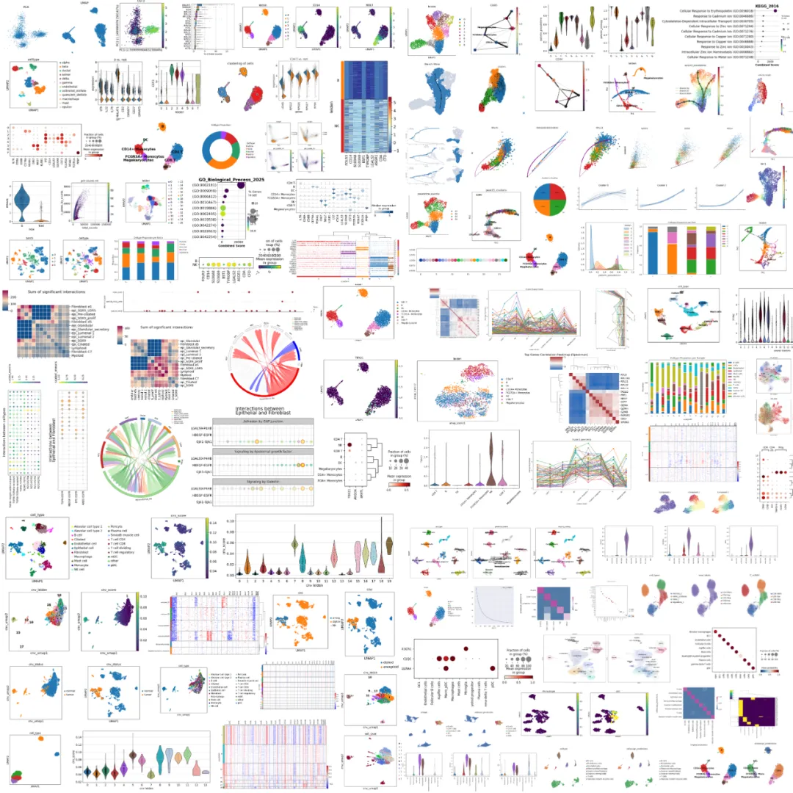
报名联系客服微信[ Biomamba_zhushou]：


内容计划&大纲
以下是我们此次课程的时间安排：
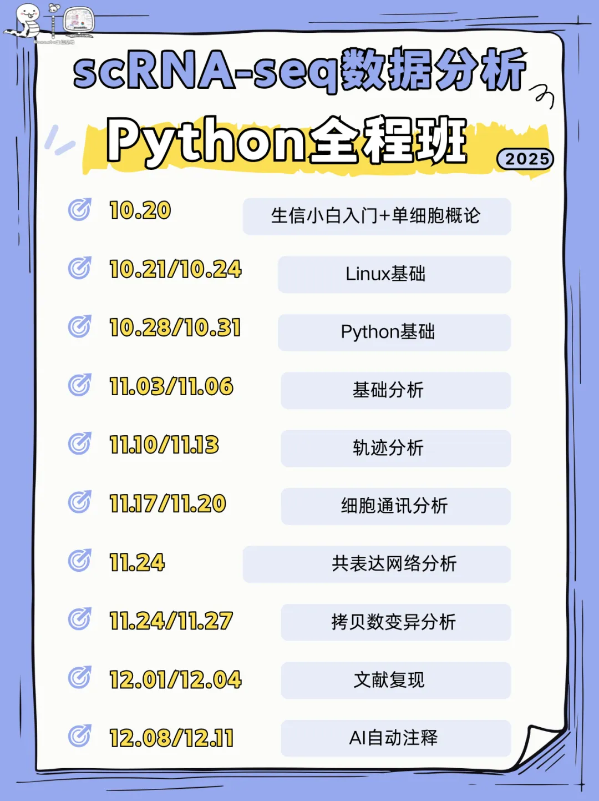
所见即所得
通过这次全程学习，你将获得并掌握以下学习手册与资料：
Linux基础课学习手册
同我们以前的课程一样，我们给大家准备了学习手册和学习资料，大家可联系客服微信[Biomamba_zhushou]领取：

Python基础课学习手册

 同我们以前的课程一样，我们给大家准备了学习手册和学习资料，大家可联系客服微信[Biomamba_zhushou]领取：
同我们以前的课程一样，我们给大家准备了学习手册和学习资料，大家可联系客服微信[Biomamba_zhushou]领取：


单细胞-基础分析学习资料
同我们以前的课程一样，我们给大家准备了学习手册和学习资料，大家可联系客服微信[Biomamba_zhushou]领取：
教程图片集锦：
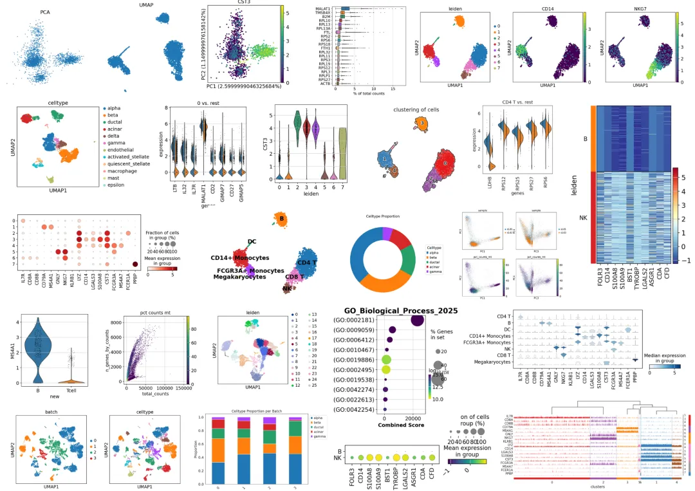
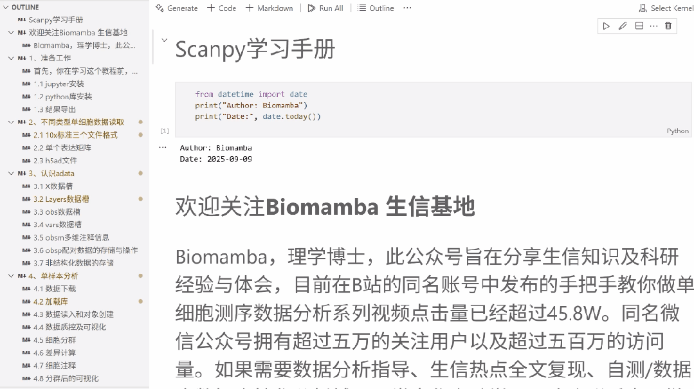
教程目录：零、欢迎关注一、准备工作1.1 jupyter安装1.2 python库安装1.3 结果导出二、不同类型单细胞数据提取2.1 10x标准三个文件格式2.2 单个表达矩阵2.3 h5ad文件三、认识adata3.1 X数据槽3.2 Layers数据槽3.3 obs数据槽3.4 vars数据槽3.5 obsm多维注释信息3.6 obsp配对数据的存储与操作3.7 非结构化数据的存储四、单样本分析4.1 数据下载4.2 加载库4.3 数据读入和对象创建4.4 数据质控与可视化4.5 细胞分群4.6 差异计算4.7 细胞注释4.8 分群后的可视化五、多样本分析5.1 数据读入和对象创建5.2 数据质控及可视化5.3 细胞分群5.4 批次效应 5.4.1 不去批次 5.4.2 BBKNN去批次 5.4.3 ingest去批次 5.4.4 harmony去批次六、细胞注释6.1 手动注释6.2 常见marker数据库6.3 自动注释 6.3.1 库加载 6.3.2 数据读入 6.3.3 自动注释七、分类变量处理八、差异分析8.1 数据读入8.2 两组之间差异计算8.3 批量差异分析8.4 差异基因可视化8.5 提取基因表达量，用matplotlib 绘制箱线图九、富集分析9.1 数据准备9.2 GO富集分析9.3 KEGG富集分析9.4 GSEA富集分析 十、细胞比例统计10.1 数据准备10.2 饼图10.3 甜甜圈图10.4 柱形图10.5 堆积柱状图10.6 箱线图十一、可视化11.1 降维展示11.2 marker基因展示 11.2.1 气泡图 11.2.2 小提琴图 11.2.3 矩阵图 11.2.4 热图 11.2.5 track图 11.2.6 拼图11.3 diff基因展示 11.3.1 气泡图 11.3.2 小提琴图 11.3.3 矩阵图 11.3.4 热图 11.3.5 track图11.4 聚类及相关性十二、软件版本十三、单细胞教程全收录十四、欢迎致谢
单细胞-进阶分析-轨迹分析学习资料
同我们以前的课程一样，我们给大家准备了学习手册和学习资料，大家可联系客服微信[Biomamba_zhushou]领取：
教程图片集锦：
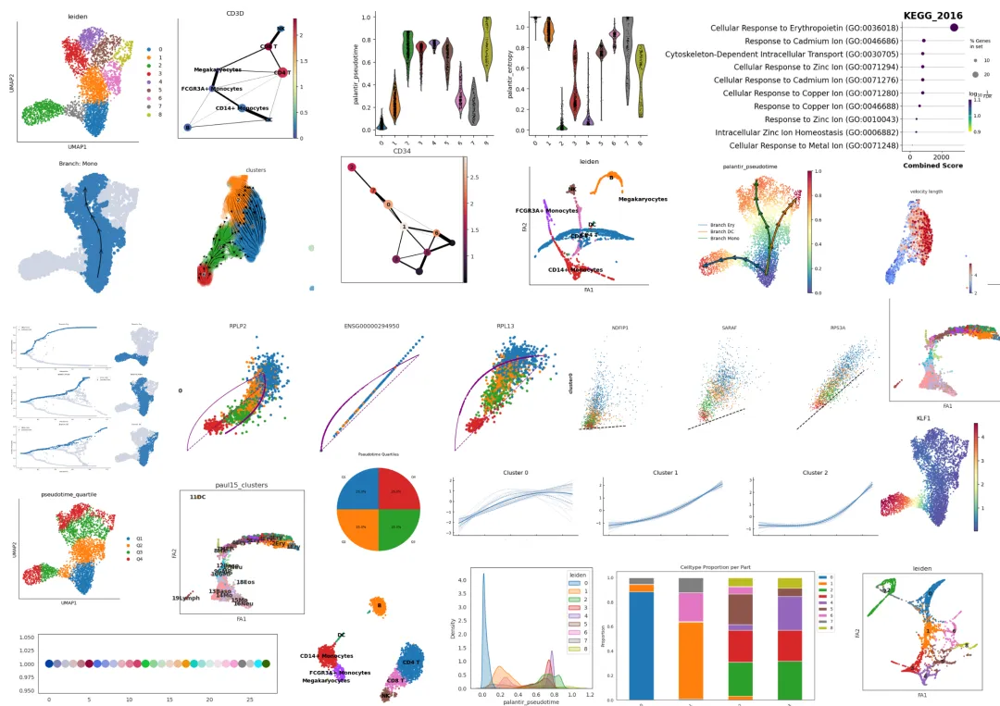
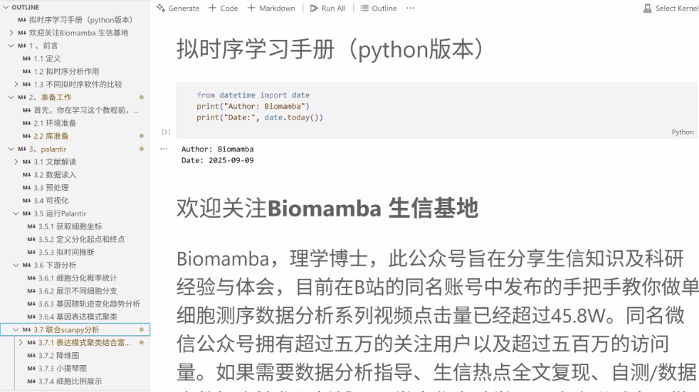
教程目录 ：零、欢迎关注一、前言1.1 定义1.2 拟时序分析作用1.3 不同拟时序软件的比较1.3.1 总体评价结果1.3.2 准确性1.3.3 可扩展性1.3.4 稳定性1.3.5 软件、文档和手稿方面的可用性二、准备工作2.1 环境准备 2.2 库准备三、palantir3.1 文献解读 3.1.1 摘要 3.1.2 结果 3.1.3 小结3.2 数据读入3.3 预处理3.4 可视化 3.5 运行Palantir 3.5.1 获取细胞坐标 3.5.2 定义分化起点和终点 3.5.3 拟时间推断3.6 下游分析 3.6.1 细胞分化概率统计 3.6.2 展示不同细胞分支 3.6.3 基因随轨迹变化趋势分析 3.6.4 基因表达模式聚类3.7 联合scanpy分析 3.7.1 表达模式聚类结合富集分析 (1) 差异基因鉴定 (2) 表达模式聚类 (3) 富集分析 3.7.2 降维图 3.7.3 小提琴图 3.7.4 细胞比例展示 3.7.5 密度分布图四、PAGA4.1 文献解读 4.1.1 摘要 4.1.2 结果 4.1.3 小结4.2 pbmc3k数据实操 4.2.1 数据读入 4.2.2 数据预处理 4.2.3 运行PAGA 4.2.4 可视化 4.2.5 重新定义发育起点4.3 人骨髓数据实操 4.3.1 数据读入 4.3.2 数据预处理 4.3.3 运行PAGA 4.3.4 可视化 4.3.5 重新定义发育起点4.4 联合scanpy分析 4.4.1 拟时间降维图 4.4.2 小提琴图 4.4.3 细胞比例展示 4.4.4 密度分布图4.5 小鼠髓系数据实操五、RNAvelocity5.1 文献解读 5.1.1 摘要 5.1.2 结果 5.1.3 小结5.2 数据下载 5.2.1 bam文件 5.2.2 repeatmask文件 5.2.3 gtf文件5.3 loom文件准备5.4 RNA速率分析 5.4.1 导入loom文件 5.4.2 导入细胞降维坐标和分群文件 5.4.3 轨迹推断 (1) 数据过滤和归一化 (2) 计算表达均值和方差 (3) 计算RNA速率 (4) 构建RNA速率图 (5) 在UMAP降维空间可视RNA速率方向 (6) 在UMAP降维空间以流场形式展示RNA速率方向5.5 下游数据挖掘 5.5.1 关注基因可视化 5.5.2 鉴定重要基因 5.5.3 细胞周期分析 5.5.4 RNA速率的置信度 5.5.5 潜在时间(latent time)分析 5.5.6 Cluster-specific top-likelihood 基因六、软件版本七、单细胞教程全收录八、欢迎致谢
单细胞-进阶分析-细胞通讯分析学习资料
同我们以前的课程一样，我们给大家准备了学习手册和学习资料，大家可联系客服微信[Biomamba_zhushou]领取：
教程图片集锦：
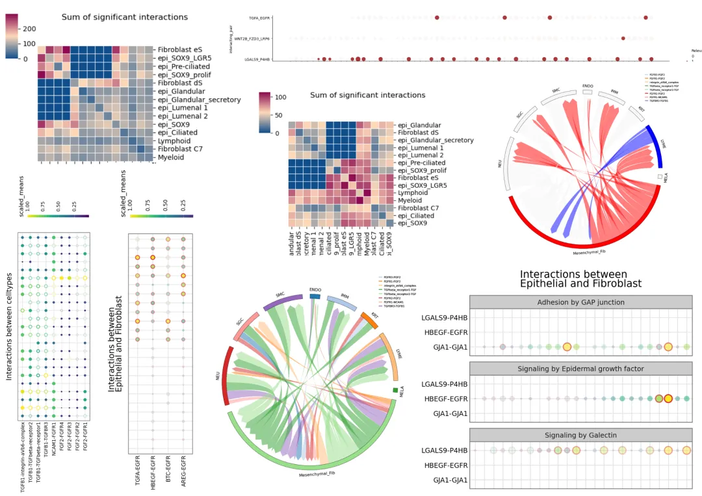
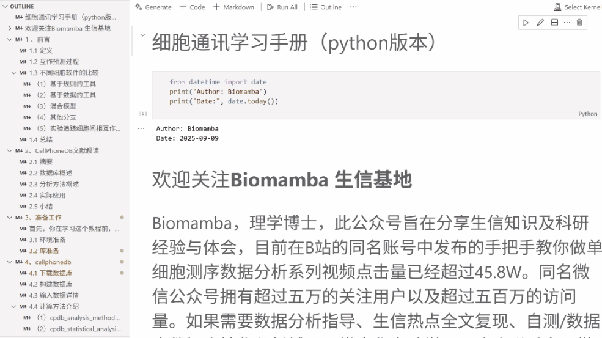
教程目录 ：
零、欢迎关注
一、前言
1.1 定义
1.2 互作预测过程
1.3 不同细胞软件的比较
1.3.1 基于规则的工具
1.3.2 基于数据的工具
1.3.3 混合模型
1.3.4 其他分支
1.3.5 实验追踪细胞间相互作用
二、CellPhoneDB文献解读
2.1 摘要
2.2 数据库概述
2.3 分析方法概述
2.4 实际应用
2.5 小结
三、准备工作
3.1 环境准备
3.2 库准备
四、cellphonedb
4.1 下载数据库
4.2 构建数据库
4.3 输入数据详情
4.4 计算方法介绍
4.4.1 cpdb_analysis_method.call
4.4.2 cpdb_statistical_analysis_method.call
4.4.3 cdpb_degs_analysis_method.call
4.5 示例代码
4.6 示例数据-方法1
4.6.1 输入文件
4.6.2 互作对预测
4.6.3 结果解读
4.6.4 思考？
4.7 示例数据-方法2
4.7.1 输入文件4.7.2 互作对预测4.7.3 结果解读4.7.4 探索CellphoneDB结果4.7.5 可视化
4.8 示例数据-方法3
4.8.1 输入文件 4.8.2 互作对预测 4.8.3 结果解读 4.8.4 探索CellphoneDB结果 4.8.5 可视化
4.9 人纤维化皮肤病单细胞数据实操
4.9.1 输入文件
4.9.2 准备文件
4.9.3 互作对预测
4.9.4 结果解读
4.9.5 探索CellphoneDB结果
4.9.6 可视化
五、软件版本****
六、单细胞教程全收录七、欢迎致谢********
****
单细胞-进阶分析-共表达网络分析学习资料
同我们以前的课程一样，我们给大家准备了学习手册和学习资料，大家可联系客服微信[Biomamba_zhushou]领取：
教程图片集锦：
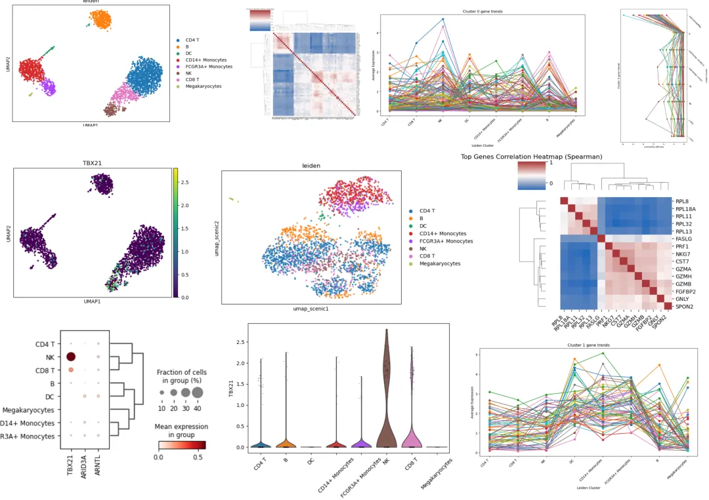
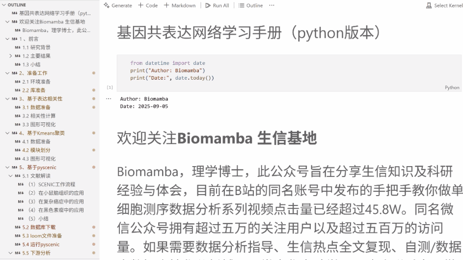
教程目录 ：
零、欢迎关注
一、前言
1.1 研究背景
1.2 主要结果
1.3 小结
二、准备工作
2.1 环境准备2.2 库准备
三、基于表达相关性
3.1 数据准备3.2 相关性计算3.3 图形可视化
四、基于Kmeans聚类
4.1 数据准备4.2 模块划分4.3 图形可视化
五、基于pyscenic****
5.1 文献解读
5.1.1 SCENIC工作流程
5.1.2 在小鼠脑组织的应用
5.1.3 在复杂癌症中的应用
5.1.4 在黑色素瘤中的应用
5.1.5 小结
5.2 数据库下载
5.3 loom文件准备
5.4 运行pyscenic
5.5 下游分析
5.5.1 基因aucell降维
5.5.2 vlnplot
5.5.3 umap
5.5.4 dotplot
六、软件版本七、单细胞教程全收录八、欢迎致谢
单细胞-进阶分析-拷贝数变异分析学习资料
同我们以前的课程一样，我们给大家准备了学习手册和学习资料，大家可联系客服微信[Biomamba_zhushou]领取：
教程图片集锦：
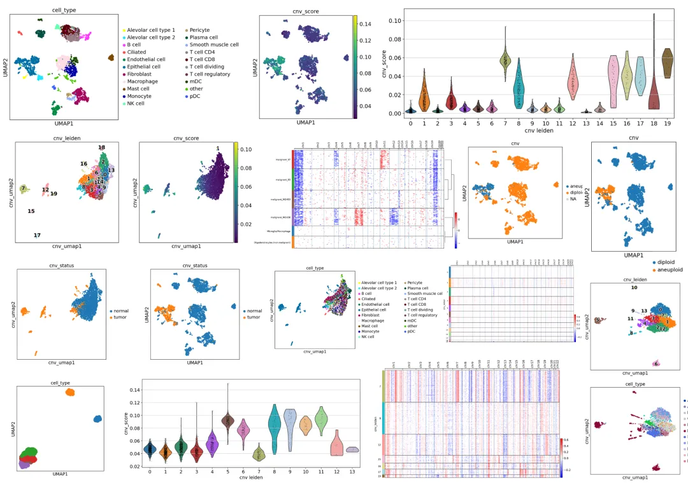
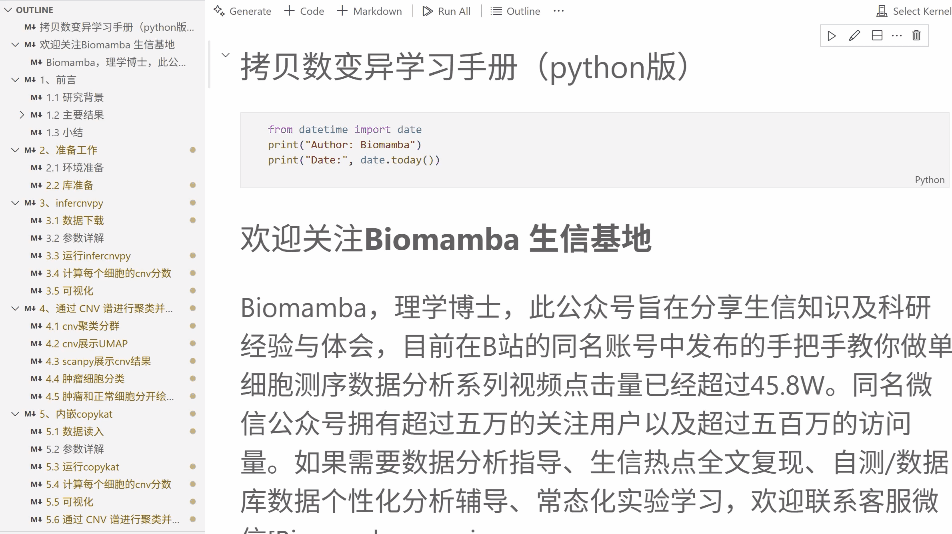
教程目录 ：
零、欢迎关注
一、前言
1.1 研究背景1.2 主要结果1.3 小结
二、准备工作
2.1 环境准备2.2 库准备
三、infercnvpy
3.1 数据下载 3.2 参数详解3.3 运行infercnvpy3.4 计算每个细胞的cnv分数3.5 可视化
四、通过CNV谱进行聚类并识别肿瘤细胞
4.1 cnv聚类分群** **
4.2 cnv展示umap
4.3 scanpy展示cnv结果
4.4 肿瘤细胞分类
4.5 肿瘤和正常细胞分开绘制热图
五、内嵌copykat
5.1 数据读入
5.2 参数详解
5.3 运行copycat
5.4 计算每个细胞的cnv分数
5.5 可视化
5.6 通过cnv谱进行聚类并识别肿瘤细胞
5.7 肿瘤和正常细胞分开绘制热图
六、对比R版本的infercnv
七、如何获取基因在染色体上的位置
八、软件版本************九、单细胞教程全收录****十、欢迎致谢

单细胞-文献复现学习资料
同我们以前的课程一样，我们给大家准备了学习手册和学习资料，大家可联系客服微信[Biomamba_zhushou]领取：
原文集锦：
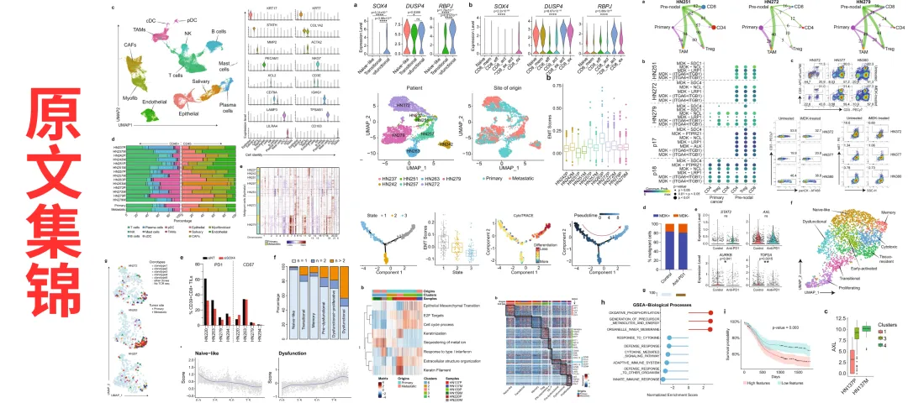
复现图片集锦：
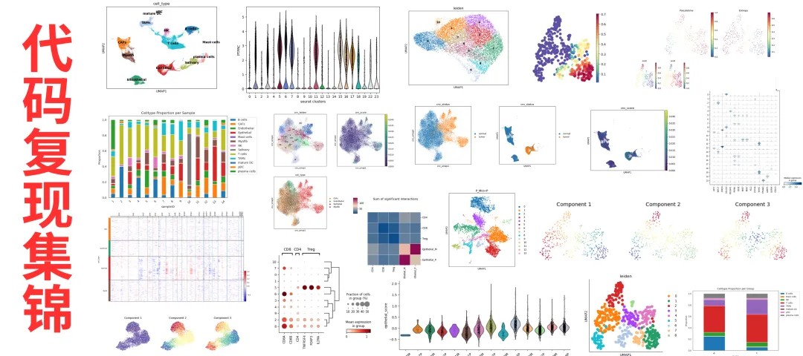
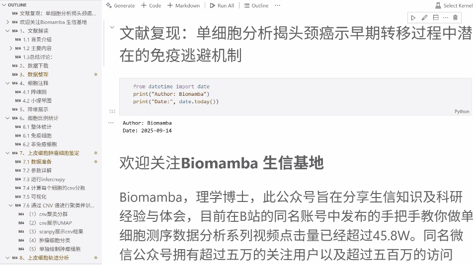
教程目录 ：
零、欢迎关注
一、文献解读
1.1 背景介绍
1.2 主要内容
1.3 总结讨论：
二、数据下载
三、数据整理
四、细胞注释
4.1 降维图
4.2 小提琴图
五、降维展示
六、细胞比例统计
6.1 整体统计
6.2 免疫细胞
6.3 非免疫细胞
七、上皮细胞肿瘤细胞鉴定
7.1 数据准备
7.2 参数详解
7.3 运行infercnvpy
7.4 计算每个细胞的cnv分数
7.5 可视化
7.6 通过CNV谱进行聚类并识别肿瘤细胞
7.6.1 cnv聚类分群
7.6.2 cnv展示UMAP
7.6.3 scanpy展示cnv结果
7.6.4 肿瘤细胞分类
7.6.5 单独绘制肿瘤细胞
八、上皮细胞轨迹分析
8.1 降维分群
8.2 预处理
8.3 可视化
8.4 运行Palantir
8.4.1 获取细胞坐标
8.4.2 定义分化起点和终点
8.4.3 拟时间推断
九、上皮细胞EMT评分
十、CD8T轨迹分析
10.1 T细胞注释
10.2 CD8 T细胞注释
10.3 预处理
10.4 可视化
10.5 运行Palantir
10.5.1 获取细胞坐标
10.5.2 定义分化起点和终点
10.5.3 拟时间推断
十一、上皮细胞互作分析
11.1 数据预处理
11.2 互作对预测
11.3 结果解读
11.4 探索cellphonedb结果
11.5 可视化
十二、软件版本
十三、单细胞教程全收录
十四、欢迎致谢
单细胞-AI自动注释学习资料
同我们以前的课程一样，我们给大家准备了学习手册和学习资料，大家可联系客服微信[Biomamba_zhushou]领取：
教程图片集锦：
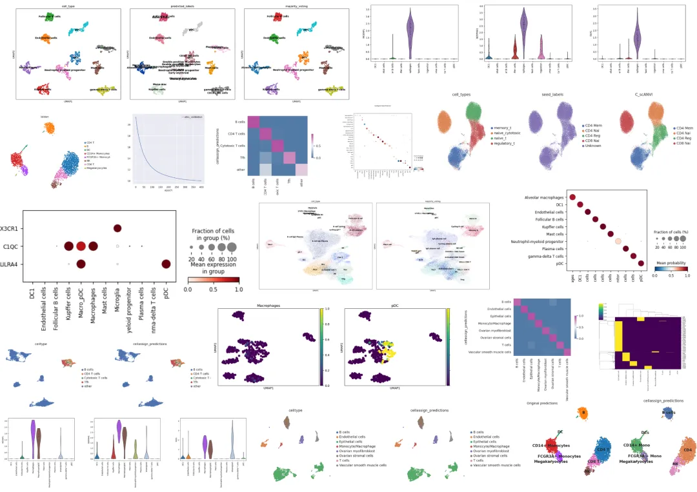
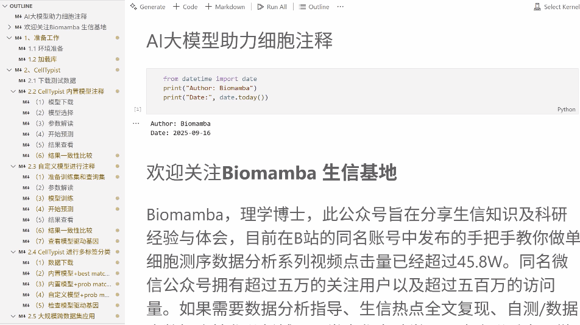
教程目录 ：
零、欢迎关注
一、准备工作
1.1 环境准备
1.2 加载库
二、CellTypist
2.1 下载测试数据
2.2 CellTypist内置模型注释
2.2.1 模型下载 2.2.2 模型选择 2.2.3 参数解读 2.2.4 开始预测 2.2.5 结果查看 2.2.6 一致性比较
2.3 自定义模型进行注释
2.3.1 准备训练集和查询集 2.3.2 参数解读 2.3.3 模型训练 2.3.4 开始预测 2.3.5 结果查看 2.3.6 结果一致性比较 2.3.7 查看模型驱动基因
2.4 CellTypist进行多标签分类
2.4.1 数据下载
2.4.2 内置模型+best match模式
2.4.3 内置模型+prob match模式
2.4.4 自定义模型+prob match模式
2.4.5 检查模型驱动基因
2.5 大规模跨数据集应用
2.5.1 数据下载
2.5.2 数据预处理
2.5.3 训练集的特征选择
2.5.4 开始预测
2.5.5 结果一致性比较
三、scVI
3.1 基础设置3.2 功能介绍3.3 滤泡性淋巴瘤细胞 3.3.1 数据下载 3.3.2 模型预测 3.3.3 结果查看 3.3.4 一致性比较3.4 HGSC数据 3.4.1 数据下载 3.4.2 模型预测 3.4.3 结果查看 3.4.4 一致性比较3.5 scANVI种子标记 3.5.1 数据下载 3.5.2 根据marker注释部分细胞 3.5.3 模型预测 3.5.4 一致性比较3.6 外部数据验证 3.6.1 数据准备 3.6.2 准备二值化矩阵 3.6.3 模型预测 3.6.4 结果查看 3.6.5 一致性比较四、环境版本信息五、单细胞教程全收录六一、欢迎致谢
报名费用
两个月的课程，单个只要4999￥！详情咨询客服微信[Biomamba_zhushou]
有其它任何想法的同学也欢迎随时联系我们，更欢迎看看我们的价值观：想钱想疯了？
线下学习环境
地点 ：南京市江宁区，详细地址咨询客服微信[Biomamba_zhushou]**
往期活动现场： **
**
除了知识之外，现场还能够给大家提供：
茶水吧、咖啡机、零食柜
各类饮料、零食小吃


如何联系我们

 留一个领取资料、开箱即用的单细胞分析镜像的微信号[Biomamba_zhushoou]，方便各位随时交流。同时我们也构建了交流群矩阵，欢迎大家入群讨论。
大家可以阅读完这几篇之后添加给生信入门初学者的小贴士
没有检索，就没有发言权
留一个领取资料、开箱即用的单细胞分析镜像的微信号[Biomamba_zhushoou]，方便各位随时交流。同时我们也构建了交流群矩阵，欢迎大家入群讨论。
大家可以阅读完这几篇之后添加给生信入门初学者的小贴士
没有检索，就没有发言权
已有生信基地联系方式的同学无需重复添加
 您点的每个赞和在看，我都认真当成了喜欢
您点的每个赞和在看，我都认真当成了喜欢